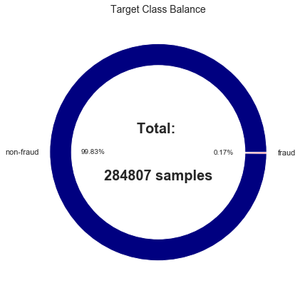
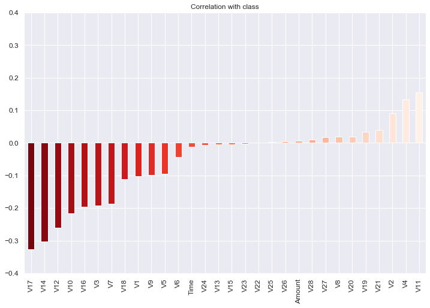
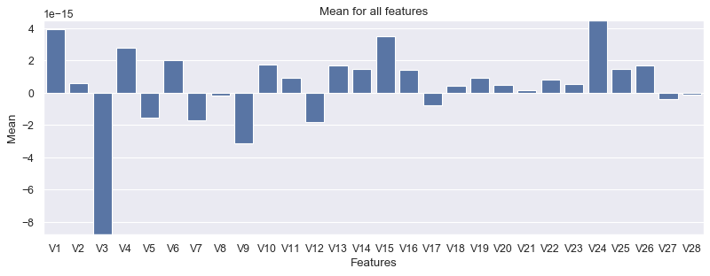
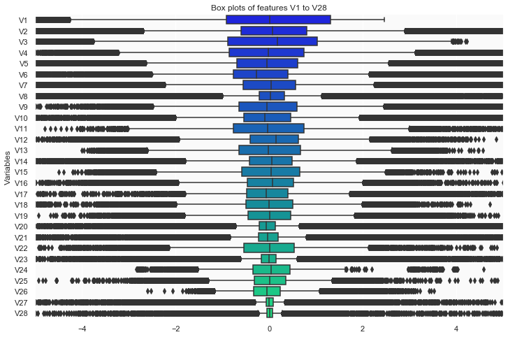

Project Description
In this project, I took the data from kaggle competition Credit Card Fraud Detection.
The dataset contains the credit card transactions in September 2013 by European cardholders. The dataset presents transactions that occurred in only 2 days. The dataset is highly imbalanced and only 0.172% cases are frauds. The dataset already comes with PCA transformation with features V1 upto V28. The only features which are not transformed are "Time" and "Amount" and the target feature is "Class".
The class is 1 if the transaction is fradulent and 0 if the transaction is not fraudulent. The data is highly imbalanced, the fraud percent is only 0.172%.
Class # Target 1 for fraud and 0 for not-fraud
Time # Time since first transaction
Amount # Amount of transaction
PCA Variables: V1 to V28
Here, our classification data is highly imbalanced. For such cases "accuracy" is not a good metric of model evaluation. In this case of fraud detection, we are more interested in Recall than the Precision. In this project I have chosen "Recall" as the metric of model evaluation. Aside from Recall, we can also use AUPRC (Area Under the Precision-Recall Curve) but here I have Recall.
In machine learning terminology, Recall is defined as:
Recall = TP (TP/FN),
where TP is true-positive and FP is false negative cases.
In this data 0 is non-fraud and 1 is fraud. True positive is the fraud classified as fraud and False Negative is actual fraud classified as non-fraud.
Here, in this project I have tried various machine learning methods. Out of these methods, here I am using lightgbm method. The lightgbm module is fast and usuaully performs state of the art results.
For more details about the project visit the project Fraud Detection in my website.
Data Description
The dataset is highly imbalanced, the class balance is shown below.

The correlations of features with target is shown below:

The mean of features V1 to V28 is shown below:

The feature distribution and outliers are shown below:
